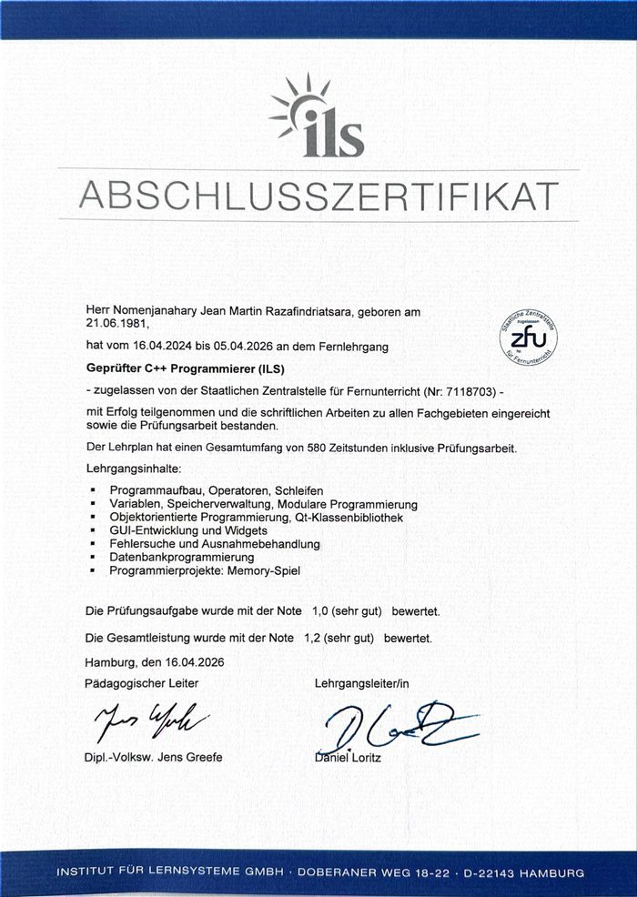
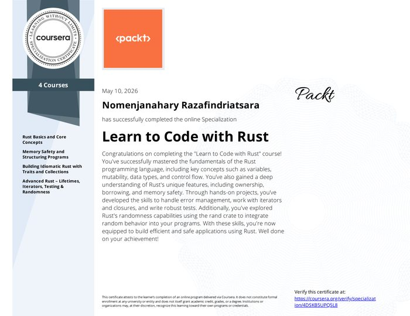
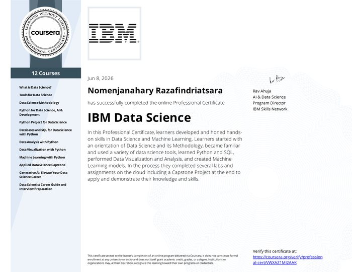
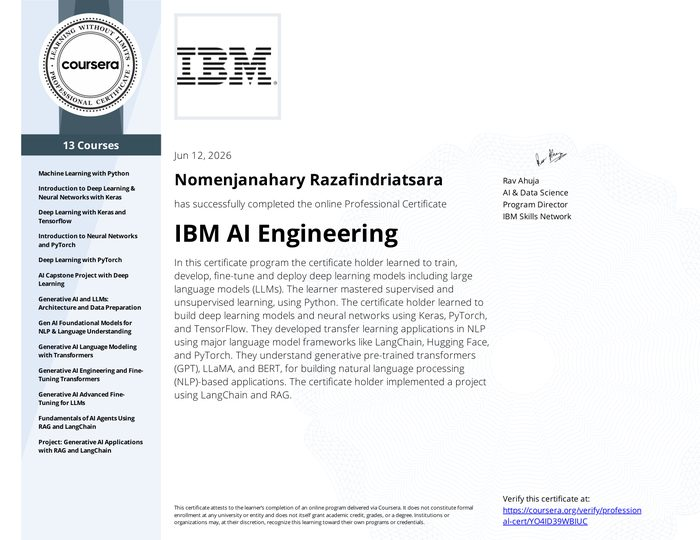
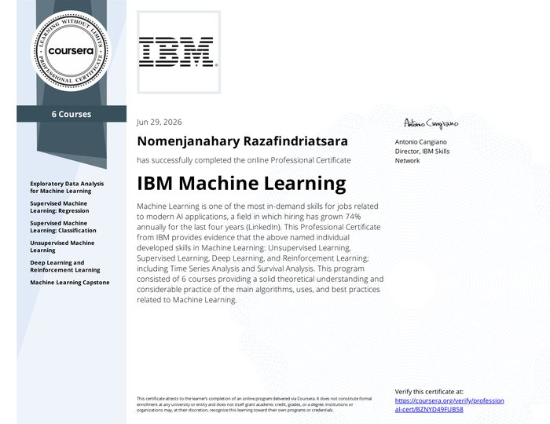
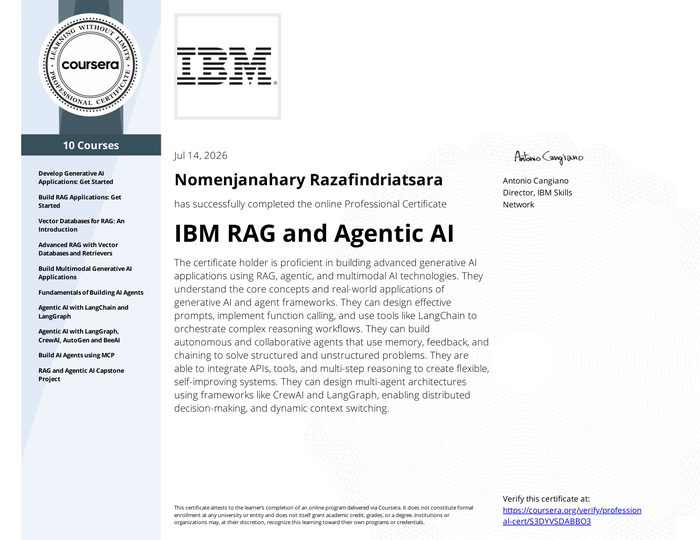
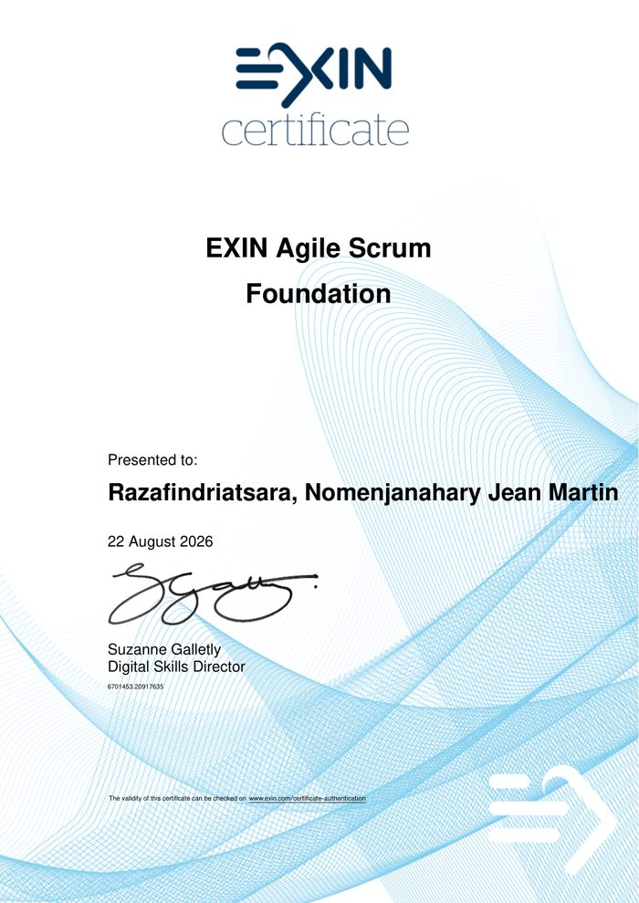

Vom Master in Philosophie zur systemnahen Softwareentwicklung. Firmware, Embedded Linux und Edge AI, gedacht mit der Sorgfalt einer geisteswissenschaftlichen Ausbildung.
Ich verbinde analytisches, strukturiertes Denken mit technischer Umsetzungsstärke: acht Jahre Beschäftigung mit Philosophie des Geistes, gefolgt von einem bewussten Wechsel in die hardwarenahe Softwareentwicklung. Mein Interesse liegt dort, wo Software auf reale Hardware trifft, von Mikrocontroller-Firmware bis Embedded Linux, und zunehmend dort, wo Machine-Learning-Modelle direkt auf ressourcenbeschränkten Geräten laufen müssen.
Seit April 2024 baue ich eigenständig ein Portfolio aus acht hardwarenahen Embedded-/Firmware-Projekten sowie Edge-AI/TinyML-Anwendungen auf, jeweils im Emulator verifiziert und per CI abgesichert. Parallel absolviere ich eine IHK-Umschulung zum Fachinformatiker Anwendungsentwicklung bei der GFN GmbH in München.
Python-Training → ONNX-Export → Rust/C++-Inferenzserver. Erfolgreich auf eigener Hardware getestet, nativer Rust-Server und Docker-Container laufend, für ressourcenschonende On-Device-Inferenz.
Feldorientierte Regelung (FOC) einer PMSM: Clarke/Park, kaskadierte PI-Strom- und Drehzahlregler, SVPWM. no_std-STM32-Firmware, in Renode verifiziert, mit CI.
IoT-Sensorknoten auf Zephyr RTOS: Threads und Message Queue, Telemetrie über MQTT/TCP-IP an einen Live-Broker. End-to-end im Emulator getestet, mit CI.
no_std-Secure-Bootloader: SHA-256-Integrität, Ed25519-Signaturen, A/B-Slots, Anti-Rollback. Bootet auf simuliertem Cortex-M in Renode.
Linux-Kernel-Plattformtreiber via Device Tree: Char-Device, sysfs und periodischer Sampler. Live in QEMU gebootet, als Yocto-Layer paketiert, mit CI.
Async-Rust-IoT-Knoten (nRF52840, Embassy): nebenläufige Tasks, Channels, Schwellwert-Alarme mit Hysterese. Live in Renode verifiziert, mit CI.
Edge AI / TinyML: neuronales Netz zur Vibrations-Anomalieerkennung als no_std-Rust-Firmware auf Cortex-M. In Python trainiert, bit-genau gegen das Referenzmodell in Renode verifiziert.
Edge AI / TinyML in C++: int8-quantisiertes Keras-Modell zur IMU-Aktivitätserkennung mit TensorFlow Lite Micro auf Cortex-M4F. In Renode verifiziert, mit CI.
Classic-AUTOSAR-ECU: geschichteter MCAL → RTE → SWC-Stack mit CAN-Netzwerk aus zwei ECUs, als STM32-Firmware in Renode lauffähig.
Progressive Web App als Liedbibliothek für eine Chorgemeinschaft. Eigenständig konzipiert, entwickelt und deployed, von der Idee bis zur live genutzten Anwendung in wenigen Tagen.
Vorschau anklicken, um das Original-PDF zu öffnen.






